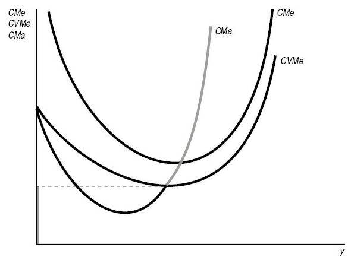
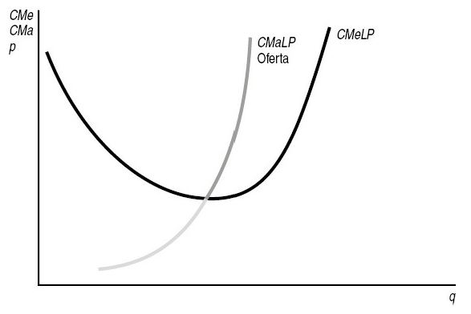

Maximização de lucros
O Problema da Firma
Introdução
Nas aulas passadas desenvolvemos uma teoria dos custos que, como vimos, apresenta um caso um pouco mais geral.
Nossa teoria de custos aplica-se não apenas às firmas tomadoras de preços no mercado de bens (concorrência perfeita) mas, também, àquelas cuja escolha de produção afeta o preço de mercado (monopólios e oligopólios).
Nosso objetivo, agora, é examinar como o nível de produto é escolhido por firmas maximizadoras de lucros.
Para isso, estudaremos o modelo de maximização de lucros de uma firma operando em um mercado perfeitamente competitivo.
Hipóteses do modelo de maximização de lucros
Suposição comportamental. A firma é maximizadora de lucro.
Hipótese simplificadora. Estudaremos a maximização de lucro de uma firma que produz apenas um tipo de produto (caso uniproduto).
Ambiente de mercado. A firma é tomadora de preços (sem poder de mercado) no mercado de bens. Mais precisamente, suporemos que a firma está vendendo seu produto em um mercado perfeitamente competitivo (concorrência pura), ou seja, em um mercado composto por firmas que produzem um bem homogêneo (sem diferenciação) e detêm individualmente uma parcela relativamente pequena do mercado.
A Maximização de lucro
Maximização de lucro no curto prazo
Dado que o preço de venda do produto da firma, denotado por \(p\), é, para ela, uma variável exógena, resta à firma escolher o nível de produção \(q\) de maneira a obter o maior lucro possível.
Mais formalmente, a decisão de uma firma perfeitamente competitiva pode ser representada pelo seguinte problema de maximização de lucro: \[\max_{q \geq 0} \pi_{CP}(q), \qquad(1)\]
sendo \(\pi_{CP}(q) = R(q) - C_{CP}(q)\) o lucro total da firma no nível de produção \(q\). \(R(q) = pq\) a receita total da firma no nível de produção (venda) \(q\) e \(C_{CP}(q)\) a função custo total de curto prazo derivada do problema de minimização de custos de cruto prazo da firma.
Maximização de lucro no curto prazo
Condição necessária de primeira ordem (solução interior). Suponha que a escolha maximizadora de lucro da firma seja \(q^* = (0, \infty)\).
Logo, a CPO para a maximização de lucro é obtida igualando o lucro marginal, \(\pi'_{CP}(q)\), a zero: \[\pi'_{CP}(q) = R'(q) - C_{CP}'(q) = 0 = p - CMg_{CP}(q^*) = 0. \qquad(2)\]
Então, a condição necessária de primeira ordem para maximização de lucro no curto prazo é de que a receita marginal, \(RMg = R'(q) = p\), seja igual ao custo marginal de curto prazo, ou seja: \[p = CMg_{CP}(q^*). \qquad(3)\]
Maximização de lucro no curto prazo
Se \(p > CMg_{CP}(q^*)\), então \(\pi'_{CP}(q^*) > 0\), de maneira que \(q^*\) não seria um nível maximizador de lucro, pois uma expansão da produção geraria um aumento do lucro.
Se \(p < CMg_{CP}(q^*)\), então \(\pi'_{CP}(q^*) < 0\), de maneira que \(q^*\) não seria um nível maximizador de lucro, pois uma redução da produção geraria um aumento do lucro.
Maximização de lucro no curto prazo
Condição de encerramento no curto prazo (solução de canto). Uma escolha possível para a firma é não produzir, ou seja, escolher \(q = 0\).
Neste caso, o lucro da firma é igual ao negativo do custo fixo total, ou seja, \(\pi_{CP}(0) = -CF\).
Portanto, para uma firma perfeitamente competitiva será melhor encerrar sua atividade quando o prejuízo de não operar for inferior ao prejuízo de operar, ou seja: \[\pi_{CP}(0) = -CF > pq^* - C_{CP}(q^*) = \pi_{CP}(q^*).\]
Como o custo total de curto prazo pode ser decomposto em custo fixo e custo variável, a desigualdade anterior pode ser reescrita como segue: \[pq^* < CV_{CP}(q^*) \iff p < \frac{CV_{CP}(q^*)}{q^*} = CVMe_{CP}(q^*).\]
Maximização de lucro no curto prazo
- Em palavras, a firma perfeitamente competitiva não opera se o preço de mercado for inferior ao custo variável médio no nível de produção \(q^*\) - Figura 1.
Figura 1: Custo marginal e oferta. Fonte: Varian (2015).
Maximização de lucro no curto prazo
Na Figura 1, embora haja dois níveis de produção em que o preço se iguala ao custo marginal, a quantidade ofertada que maximiza lucro só pode situar-se na parte de inclinação ascendente da curva de custo marginal - pela condição de segunda ordem para maximização de lucro.
A firma não operará nos pontos da curva de custo marginal situados abaixo da curva de custo médio porque poderia obter maiores lucros (menores perdas) se encerrasse suas atividades.
Maximização de lucro no curto prazo
Curva de oferta de curto prazo inversa de uma firma perfeitamente competitiva. É a função que associa a cada nível de produção \(q > 0\) da firma o correspondente valor do preço de mercado que tornaria \(q\) a escolha maximizadora de lucro.
Formalmente: \[p = CMg_{CP}(q), \qquad \forall q \geq \bar{q},\] sendo \(\bar{q}\) o nível de produção no qual o custo variável médio de curto prazo é mínimo, ou seja, o ponto definido implicitamente pela condição \(CMg_{CP}(\bar{q}) = CVMe_{CP}(\bar{q})\).
Maximização de lucro no curto prazo
Curva de oferta de curto prazo de uma firma perfeitamente competitiva. É a função que associa a cada nível de preço \(p > CVMe(\bar{q})\) a quantidade \(q\) do bem que uma firma produz para maximizar seu lucro.
Em outras palavras, tal função oferta é a inversa da função custo marginal de curto prazo, ou seja: \[q^* = CMg_{CP}^{-1}(p), \qquad \forall p \geq CVMe(\bar{q}).\]
Maximização de lucro no curto prazo
Figura 2: Custo variável médio e oferta. Fonte: Varian (2015).
Maximização de lucro no curto prazo
A Figura 2 mostra que a curva de oferta é a parte ascendente da curva de custo marginal que está acima da curva de custo variável médio.
A firma não operará nos pontos da curva de custo marginal situados abaixo da curva de custo médio porque poderia obter maiores lucros (menores perdas) se fechasse suas atividades.
Exercício
Considere uma função de produção do tipo Cobb-Douglas, no curto prazo, \(q = f(\bar{k},l) = \bar{k}^\alpha l^\beta\).
A função custo de curto prazo é dada por: \[C_{CP}(q) = v\bar{k} + wq^{1/\beta}\bar{k}^{-\alpha/\beta}.\]
Portanto, o problema de maximização de lucro da firma é dado por: \[\max_{q} pq - v\bar{k} - wq^{1/\beta}\bar{k}^{-\alpha/\beta}.\]
A escolha ótima de quantidade produzida será, portanto: \[q^* = \left(\frac{w}{\beta}\right)^{-\beta/(1-\beta)}\bar{k}^{\alpha/(1-\beta)}p^{\beta/(1-\beta)}.\]
Exercício
A função de oferta apresenta algumas características familiares:
A curva de oferta é positivamente inclinada - aumentos nos preços \(p\) faz com que a firma produza mais pois está disposta a incorrer em um custo marginal mais alto.
A curva de oferta é deslocada para a esquerda por aumentos na taxa de salário, \(w\) - ou seja, para um dado nível de preço de produto, a quantidade ofertada é menor se a taxa salarial for maior.
A curva de oferta é deslocada para a direita se tivermos aumentos no insumo capital \(\bar{k}\) - com um estoque de capital maior no curto prazo, a firma incorre em um nível determinado de custo marginal de curto prazo a um nível de produção maior.
A taxa de aluguel de capital, \(v\), é irrelevante para as decisões de oferta de curto prazo porque é somente um componente de custos fixos.
Maximização de lucro no longo prazo
Dado o preço de venda do produto, uma firma perfeitamente competitiva escolhe o nível de produção \(q\) de maneira a obter o maior lucro possível ajustando, se necessário, todos os fatores de produção.
No caso do longo prazo, então, o problema de maximização de lucro é: \[\max_{q \geq 0} \pi(q), \qquad(4)\]
sendo \(\pi(q) = R(q) - C(q)\) o lucro total de longo prazo da firma no nível de produção \(q\), \(R(q) = pq\) é a receita total da firma no nível de produção (venda) \(q\) e \(C(q)\) é a função custo total de longo prazo derivada do problema de minimização de custos de longo prazo da firma.
Maximização de lucro no longo prazo
Condição necessária de primeira ordem (solução interior). Suponha que a escolha maximizadora de lucro da firma seja \(q^* = (0, \infty)\). Logo, a condição necessária de primeira ordem para a maximização de lucro é obtida igualando o lucro marginal, \(\pi'(q)\), a zero: \[\pi'(q^*) = R'(q^*) - C'(q^*) = p - CMg(q^*) = 0. \qquad(5)\]
Então, a condição necessária para maximização do lucro no longo prazo é de que a receita marginal seja igual ao custo marginal, ou seja: \[p = CMg(q^*). \qquad(6)\]
Maximização de lucro no longo prazo
Condição de encerramento no longo prazo (solução de canto). No longo prazo uma firma pode sair do mercado, ou seja, escolher \(q = 0\).
Nesse caso, como não há custo fixo, o lucro da firma é nulo, ou seja, \(\pi(0) = 0\).
Portanto, para uma firma perfeitamente competitiva será melhor sair do mercado se: \[\pi(q^*) = pq^* - C(q^*) < 0 = \pi(0). \qquad(7)\]
A desigualdade na Equação 7 pode ser reescrita como: \[pq^* < C(q^*) \iff p < CMe(q^*). \qquad(8)\]
Enfim, a firma perfeitamente competitiva sai do mercado se o preço de mercado for inferior ao seu custo médio de longo prazo na escolha \(q^*\).
Maximização de lucro no longo prazo
- Curva de oferta inversa de longo prazo de uma firma perfeitamente competitiva. É a função que associa a cada nível de produção \(q > 0\) da firma o correspondente valor do preço de mercado que tornaria \(q\) a escolha maximizadora de lucro.
- Formalmente: \[p = CMg(q), \qquad \forall q \geq \tilde{q},\] sendo \(\tilde{q}\) o nível de produção no qual o custo médio de longo prazo (que é igual ao custo variável médio de longo prazo) é mínimo, ou seja, o ponto definido implicitamente pela condição \(CMg(\tilde{q}) = CMe(\tilde{q})\).
Maximização de lucro no longo prazo
Curva de oferta de longo prazo de uma firma perfeitamente competitiva. É a função que associa a cada nível de preço \(p > CMe(\tilde{q})\) a quantidade \(q\) do bem que uma firma produz para maximizar seu lucro.
Em outros termos, tal função oferta é a inversa da função custo marginal de longo prazo, ou seja: \[S(p) = CMg^{-1}(p), \qquad \forall p \geq CMe(\tilde{q}).\]
Maximização de lucro no longo prazo
Figura 3: Curva de oferta de longo prazo. Fonte: Varian (2015).
Maximização de lucro no longo prazo
- Como evidenciado na Figura 3, a curva de oferta de longo prazo será a parte de inclinação ascendente da curva de custo marginal de longo prazo que se situa acima da curva de custo médio.
üìö Bibliografia
NICHOLSON, W.; SNYDER C. Teoria microeconômica: Princípios básicos e aplicações. Cengage Learning Brasil, 2019. Disponível em: app.minhabiblioteca.com.br/books/9788522127030
VARIAN, H. R. Intermediate Microeconomics: A modern approach. 7.ed. New York: W.W. Norton & Company, 2006.
MAS-COLELL, A.; WHINSTON M.D.; GREEN, J.R. Microeconomic Theory. New York: Oxford University Press, 1995.